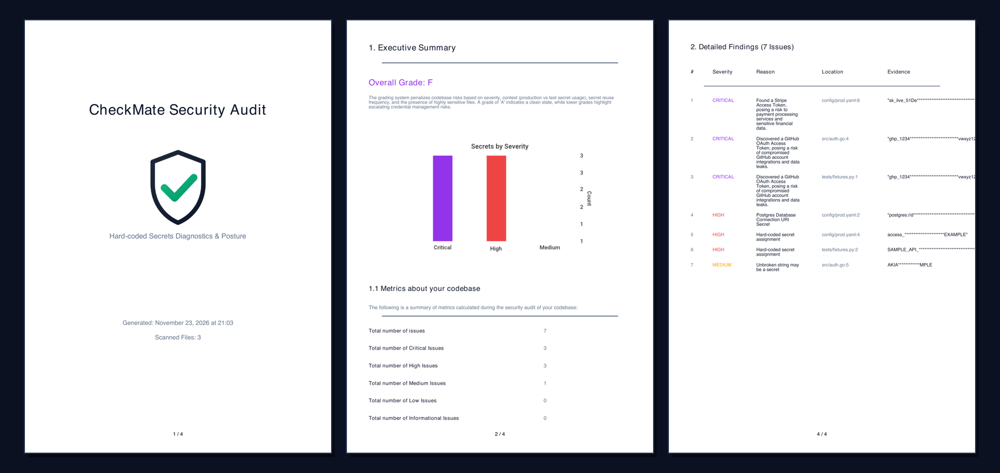
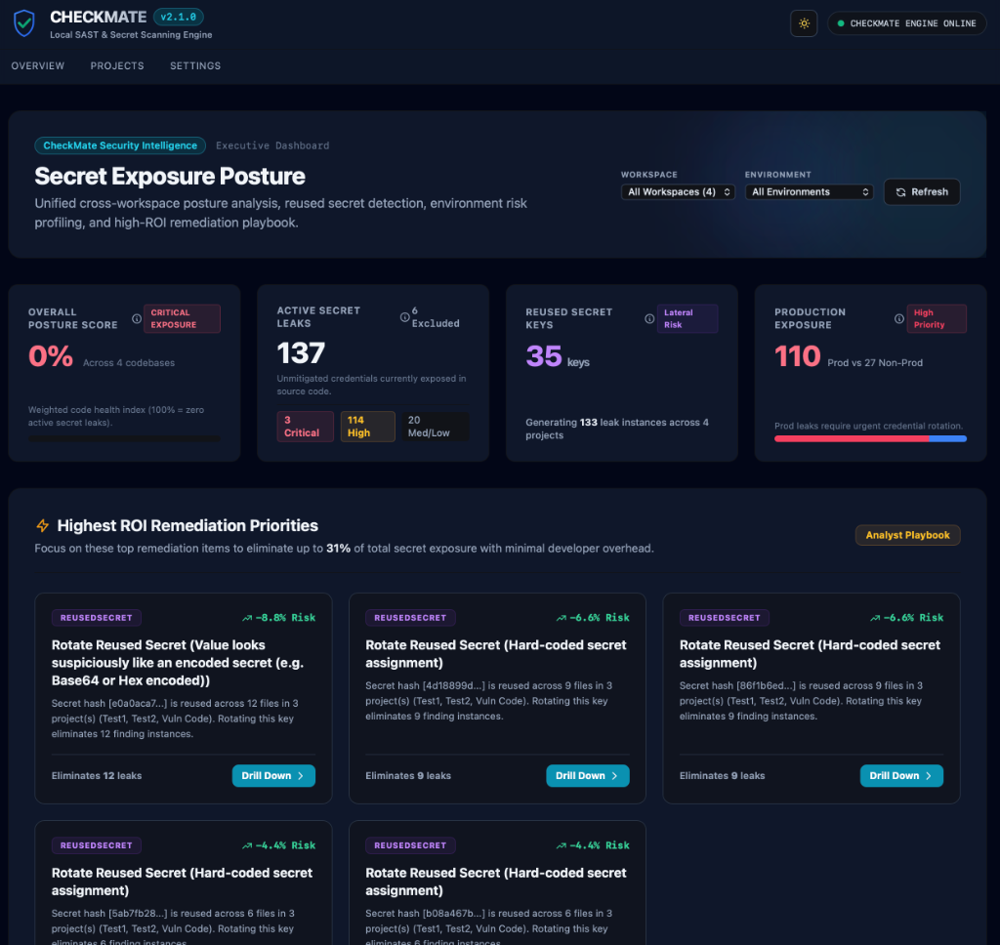

Prevent a breach with deterministic secret detection and AI-assisted triage
CheckMate finds hard-coded API keys, passwords, tokens, and private keys across source code, configs, logs, and Git repositories. Run it from the command line, drive it from AI coding agents over MCP, self-host the API server, or manage organisation-wide exposure in the native Desktop App.
Fast, deterministic scanning everywhere code lives
Built in Go for speed and portability, the CheckMate CLI combines Shannon entropy analysis, structural code context, and pattern matching behind a literal prefilter. Scan local directories, remote Git URLs, or CI pipelines with zero external dependencies.
Git Pre-Commit Hooks & AI-Native CLI
Block leaked secrets before they enter Git history with checkmate hook install, staged Git index diff scanning, and self-describing agent output.
checkmate hook run: fast staged-blob & added-line scanning, redacted output, exit codes0/1/2checkmate describe&--format agent: instant JSON/Markdown capability discovery & structured envelopes- Scans
.env*,.tfvars,.toml,.tsx,id_ed25519, and JS/TS/Deno env-fallback literals - Auto-discovers
.checkmate.yaml, inlinecheckmate:ignore, plus.pre-commit-hooks.yaml
Private Git, SARIF 2.1.0, PDF & JSON
Scan local paths, stdin, or authenticated HTTPS/SSH remote repos and emit developer-ready and audit-ready reports without middleware.
- Unified Git auth:
git_config,--git-token,--ssh-key,ssh-agent& env tokens - Native SARIF 2.1.0 with
partialFingerprints& standardsuppressions[] - Native PDF executive audit reports, redacted text summaries & JSON
- Direct GitHub Code Scanning & SIEM ingestion
LSP 3.17, Self-Hosted API & Go SDK
Catch secrets inline while you type, run CheckMate as a team service, or embed it directly inside Go tooling.
checkmate lspServe: LSP 3.17 real-time diagnostics, workspace scans & Quick Fix suppressionscheckmate api:/v1/REST, WebSocket, SSE & Streamable HTTP MCP- JWT auth, scoped
cm_API keys & HMAC webhooks - Importable Go SDK (
pkg/sdk) withScanPathWithReport& GitHub Action

Native Model Context Protocol (MCP) Server
High-recall secret scanners inevitably flag test fixtures, mock tokens, integrity hashes, and documentation placeholders. CheckMate exposes a built-in MCP server over both stdio (checkmate mcp serve) and Streamable HTTP (/v1/mcp) so AI coding agents like GitHub Copilot, Claude Code, and Cursor can run CheckMate, investigate flagged coordinates in full codebase context, suppress false positives, and produce clean, sanitised results.
How the Agent Triage Loop Works
CheckMate acts as the deterministic high-recall sensor and suppression store; the AI agent acts as the contextual investigator. Repeated noise is clustered by directory or checksum so hundreds of false positives can be verified and suppressed in seconds, with blast-radius previews before any broad rule is committed.
checkmate_scan
Scan local paths, private Git URLs, or a gitDiffBase. Supports async: true, live notifications/progress, keepCheckout, and structured acquisition error reporting.
checkmate_get_scan_status
Poll live file progress and final cluster overview for long-running asynchronous scans on large monorepos.
checkmate_get_worklist
Group untriaged findings by checksum, directory, file, or rule with configurable samplesPerGroup and local/retained file pointers.
checkmate_list_findings
Paginate individual canonically ordered findings filtered by file, rule, checksum, severity, or triage status without the worklist sample cap.
checkmate_get_finding_context
Inspect numbered source code lines around any finding from local disk or a retained remote checkout, enabling remote HTTP MCP triage.
checkmate_cleanup_checkout
Delete 0700 retained remote Git checkouts after triage completes and record an immutable audit_log entry.
checkmate_preview_suppression
Dry-run any suppression rule to inspect matched count and verify zero confirmed true positives are affected.
checkmate_triage_batch
Write back true_positive, false_positive, or needs_review verdicts with checksum fan-out and durable exceptions.
checkmate_apply_suppression_rule
Persist scoped pattern rules (pathRegex, globalHash, pathHash, etc.) with wildcard guardrails and scan reconciliation.
checkmate_export_sanitised
Export sanitised json, sarif, csv, pdf, or a committable .checkmate.yaml policy.
Connect Any MCP-Compatible AI Tool
Add CheckMate to your IDE or CLI agent configuration. It shares the same SQLite database as CheckMate App, so agent triage decisions immediately clean up your desktop dashboard and carry forward across future scans unless surrounding code context changes.
{
"mcpServers": {
"checkmate": {
"command": "checkmate",
"args": ["mcp", "serve"]
}
}
}
# One-shot stateless mode for CI / PR agents (auto-cleans retained checkouts)
checkmate mcp serve --ephemeral
# Remote team server (Streamable HTTP + SSE + REST write-back)
checkmate api --port 17283 --data-path ~/.checkmate
# MCP JSON-RPC: POST /v1/mcp | SSE progress: GET /v1/mcp | Close: DELETE /v1/mcp
# Finding context: GET /v1/findings/{findingId}/context | Sanitised: GET /v1/scans/{scanId}/sanitised
Executive & analyst intelligence in a native cross-platform app
CheckMate App brings the full CheckMate engine into a native desktop experience for macOS, Windows, Linux, and Docker web mode. Correlate findings across projects, identify reused secrets, prioritise remediation by ROI, and govern exceptions with full auditability.

Executive Posture Dashboard
Unified security posture rating across workspaces and repositories with real-time filtering, scan progress tracking, and interactive multi-scan SVG trend charts.
BYO AI Auto-Triage
Connect local air-gapped Ollama models or cloud providers (OpenAI, Anthropic, DeepSeek, vLLM). Auto-suppress high-confidence false positives with REDACTED prompt mode and permanent human override memory.
Reused Secrets & ROI Playbook
Correlates identical secret hashes across multiple repositories to detect lateral movement risk and ranks the top remediation actions that eliminate the most leak instances fastest.
Production vs. Test Profiling
Separates live production credentials from test suites, mocks, and fixtures so engineering teams focus first on genuinely exploitable exposure.
Governed Exception Management
First-class suppression rules with granular scopes (hash, file, directory, regex, project), mandatory justifications, optional expiry dates, and immutable audit trails.
Authenticated Git, Context & Native UI
Clones private HTTPS and SSH repositories using saved Git Services or SSH keys, surfaces explicit clone failure reasons instead of empty scans, inspects surrounding source lines, and ships via Homebrew Cask, Winget, Linux, and Docker.
Non-negotiable architectural guardrails
CheckMate is built so that AI assistance and performance optimisations never weaken deterministic security guarantees or leak credentials.
1. AI never overwrites deterministic scores
Finding severity, confidence, and raw scan totals remain pure functions of the deterministic engine. Triage verdicts and sanitised metrics are stored alongside them with full provenance.
2. No plaintext secrets persisted
CheckMate never writes raw secret values to SQLite. Only SHA-256 secret checksums and redacted previews are stored, while still enabling cross-project reuse detection.
3. Stable finding identity & drift tracking
Deterministic finding_id hashes track findings across scans without joins, and context_hash resets prior triage automatically if surrounding code changes.
4. Safe suppression guardrails
Agent suppression rules reject wildcard catch-all regexes, preview blast radius before applying, refuse to silently suppress confirmed true positives, and log every action to audit_log.
Choose the right surface for every workflow
All CheckMate surfaces share the same detection engine, exception model, and SQLite database so findings triaged in one interface stay consistent everywhere.
| Capability | CLI (checkmate search) |
MCP Server (checkmate mcp serve) |
API Server (checkmate api) |
Desktop App (checkmate-app) |
|---|---|---|---|---|
| Best For | Developers, scripts, CI/CD | AI coding agents & automated FP triage | Self-hosted teams, webhooks, cron | Security leads, analysts, visual triage |
| Authenticated Git (HTTPS + SSH) | Tokens, SSH & env | git_config + keepCheckout | git_config + SSH | Saved Git Services + SSH |
| Live Progress & Async Scans | Live commentary | async + SSE progress | WebSocket + SSE | Real-time progress |
| In-Editor LSP 3.17 & Quick Fixes | checkmate lspServe | Shared SQLite DB | Shared SQLite DB | Shared SQLite DB |
| Git Pre-Commit & Staged Diff | hook run + --staged | gitDiffBase | Via /v1/mcp | Project scan |
| AI-Native Discovery & Redaction | describe + --format agent | Agent-driven MCP | BYOK + Write-back | BYO AI + Auto-Suppress |
| SARIF 2.1.0 + Suppressions | Built-in | Sanitised & Audit | ?view=sanitised | Exportable |
| Cross-Project Reused Secrets & ROI | Per scan | Clustered worklist | SQLite store | Interactive dashboard |
| Governed Exceptions & Audit Log | .checkmate.yaml | Preview & Persist | /v1/exceptions | Full UI & Audit |
Up and running in under a minute
Pick your installation path below. Everything runs locally on your machine or self-hosted inside your own infrastructure.
# Install on macOS via Homebrew brew install adedayo/tap/checkmate # Install CheckMate as your repository's Git pre-commit hook checkmate hook install # Run manually on staged Git index blobs & added lines (redacted, exit 1 on findings) checkmate hook run # Raise threshold to High for TypeScript/Supabase repos checkmate hook run --min-confidence high # AI-native discovery & structured agent JSON output checkmate describe checkmate hook run --staged --format json # Or add to .pre-commit-config.yaml (pre-commit framework): # - repo: https://github.com/adedayo/checkmate # rev: v1.8.2 # hooks: # - id: checkmate-staged
# Install on macOS via Homebrew brew install adedayo/tap/checkmate # Scan a local project checkmate search /path/to/your/project # Scan a private HTTPS or SSH Git repository with explicit depth checkmate search --git-token-env GITHUB_TOKEN --git-depth 1 https://github.com/org/private-repo.git checkmate search --ssh-key ~/.ssh/id_ed25519 git@github.com:org/private-repo.git # Export SARIF 2.1.0 for GitHub Code Scanning or generate a PDF audit report checkmate search --sarif /path/to/project > results.sarif checkmate search --pdf /path/to/project # Start the Language Server Protocol 3.17 (LSP) server for IDE integration checkmate lspServe
# macOS (Apple Silicon & Intel) via Homebrew Cask (recommended) brew install --cask adedayo/tap/checkmate-app # Windows via Winget winget install adedayo.checkmate-app # Headless Web Mode via Docker (shared ~/.checkmate SQLite store) docker run -d \ --name checkmate-app \ -p 8080:8080 \ -v ~/.checkmate:/root/.checkmate \ ghcr.io/adedayo/checkmate-app:latest
# Run persistent stdio MCP server (shares ~/.checkmate/checkmate.db with Desktop App) checkmate mcp serve # Run ephemeral stdio MCP server for stateless CI or PR reviews checkmate mcp serve --ephemeral # Example agent prompt once connected: # "Use CheckMate to scan this repo, inspect flagged locations in context, # suppress verified false positives, and export a sanitised SARIF report."
# Start the LSP 3.17 server over stdio (shared ~/.checkmate DB + Quick Fix suppressions)
checkmate lspServe
# Neovim (0.11+):
# vim.lsp.config("checkmate", { cmd = { "checkmate", "lspServe" }, root_markers = { ".git" } })
# vim.lsp.enable("checkmate")
# Helix (~/.config/helix/languages.toml):
# [language-server.checkmate]
# command = "checkmate"
# args = ["lspServe"]
# Zed (~/.config/zed/settings.json):
# { "lsp": { "checkmate": { "binary": { "path": "checkmate", "arguments": ["lspServe"] } } } }
# VS Code: configure your LSP client to launch "checkmate lspServe" (or add "--no-db" for .checkmate.yaml only)
# Start the self-hosted API + Streamable HTTP MCP server (/v1/mcp) checkmate api --port 17283 --data-path ~/.checkmate # Or pull the multi-mode container image docker pull ghcr.io/adedayo/checkmate # Run a local Ollama sidecar for air-gapped BYOK AI triage docker compose -f docker-compose.ollama.yml up -d